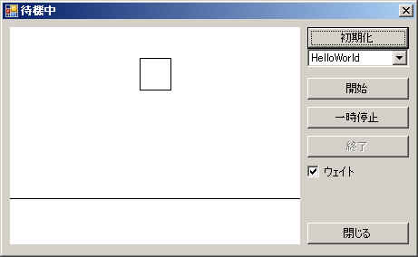

覚書として、Box2D(Box2DLib.DLL)の使い方を書いておきます。
Box2Dを使う場合、大雑把に下記のよう流れになります。
１．シミュレーションワールドを生成する
２．シミュレーションワールドに物体を配置する
２．１ ボディ定義を作成
２．２ ボディを生成
２．３ シェイプ定義を作成
２．４ ボディにシェイプを追加
２．５ ボディの塊情報を生成
３．シミュレーションを行う
３．１ 計算
３．２ 表示
下記はBox2Dのドキュメントに載っている HelloWorld を
VBに移植したコードになります。
このコードを元に使い方を説明します。
| Option
Explicit On Option Strict On 'Box2DLib.DLLを参照設定する必要があります。 Imports Box2DLib Module Module1 'これはBox2Dを使用してシミュレーションを構築/実行するシンプルな使用例です。 '地面を表す箱と落下する小さな箱を作成します。 Sub Main() 'シミュレーションワールドのサイズを定義します。 Dim worldAABB As New bb2AABB worldAABB.lowerBound.Set(-100.0F, -100.0F) worldAABB.upperBound.Set(100.0F, 100.0F) '重力ベクタを定義します。 Dim gravity As New bb2Vec2(0.0F, -10.0F) '物体はスリープ状態になれることとします。 Dim doSleep As Boolean = True 'ワールドオブジェクトを生成します。 '(ワールドオブジェクトは物体を保持してシミュレーションを行います。） Dim world As New bb2World(worldAABB, gravity, doSleep) '地面用の物体定義を生成します。 Dim groundBodyDef As New bb2BodyDef groundBodyDef.position.Set(0.0F, -10.0F) '地面用の物体定義を引数にCreateBodyを呼び出すと 'シミュレーションワールドに地面を表す物体(ボディー)が追加されます。 Dim graoundBody As bb2Body = world.CreateBody(groundBodyDef) '地面物体用の形状定義を生成します。 Dim groundShapeDef As New bb2PolygonDef '半分のサイズを指定して形状定義を「ボックス」にします。 groundShapeDef.SetAsBox(50.0F, 10.0F) '地面物体(ボディー)に形状(ボックスのシェイプ)を与えます。 graoundBody.CreateShape(groundShapeDef) '落下する箱物体を位置を指定して生成します。 Dim bodyDef As New bb2BodyDef bodyDef.position.Set(0.0F, 4.0F) Dim body As bb2Body = world.CreateBody(bodyDef) '落下箱物体の形状定義を生成します。 Dim shapedef As New bb2PolygonDef shapedef.SetAsBox(1.0F, 1.0F) '箱の密度(density)を0以外にします。これにより移動するようになります。 shapedef.density = 1.0F '摩擦係数(friction)を設定します。 shapedef.friction = 0.3F '落下箱物体に形状を与えます。 body.CreateShape(shapedef) '塊属性を現在の形状から自動生成します。 body.SetMassFromShapes() 'シミュレーションの準備として、 'タイムステップを60Hz、繰り返し回数を10にします。 '通常はこれで十分です。 Dim timeStep As Single = 1.0F / 60.0F Dim iterations As Integer = 10 '６０回繰り返します。 For i As Integer = 0 To 59 'シミュレーションを１ステップ行います。 '一般的にタイムステップと繰り返し回数は固定にした方がよいです。 world.Step(timeStep, iterations) '落下箱物体の位置と角度を出力します。 Dim position As bb2Vec2 = body.GetPosition() Dim angle As Single = body.GetAngle() Console.WriteLine("{0,3:f} {1,3:f} {2,3:f}", position.x, position.y, angle) Next End Sub End Module |
このコードは、四角の箱が地面に落下するだけのシュミレーションです。
下記は、HellowWorldを視覚化した画像です。
(サンプルのSimpleDrawの画像です)

０．参照設定
まずは Box2DLib.DLL を参照設定します。
メニュー「プロジェクト」－「参照の追加」－「参照」タブをクリックし、
「Box2DLib.DLL」を選択します。
１．シミュレーションワールドを生成する
'シミュレーションワールドのサイズを定義します。 Dim worldAABB As New bb2AABB worldAABB.lowerBound.Set(-100.0F, -100.0F) worldAABB.upperBound.Set(100.0F, 100.0F) '重力ベクタを定義します。 Dim gravity As New bb2Vec2(0.0F, -10.0F) '物体はスリープ状態になれることとします。 Dim doSleep As Boolean = True 'ワールドオブジェクトを生成します。 '(ワールドオブジェクトは物体を保持してシミュレーションを行います。） Dim world As New bb2World(worldAABB, gravity, doSleep) |
ワールドの広さ、重力ベクトル、スリープ状態の有無を指定して
シミュレーションワールド(bb2World)を生成します。
ワールドサイズはbb2AABB(AABBってのは axis aligned bounding box の意味。多分)
というクラスのメンバに下限上限を設定して指定します。
ワールドのサイズを越えた物体は、各種計算が行われなくなりますので
十分な広さを指定するようにして下さい。
（ただし、広すぎると遅くなったり精度が落ちたりするかもしれません。）
HelloWorldでは (-100,-100)～(100,100)の範囲を指定しています。
重力ベクトルは重力による移動方向と大きさです。
通常は真下に働く様にするので、
ｘ＝０、ｙ＝負数の値(上では-10.0f)を用います。
当然ですが、正の値を指定すれば物体は上に引っ張られますし、
絶対値が大きい程、強い力となります。
bb2Worldのコンストラクタ第三引数は
物体がスリープ状態となることを許すかどうかの値です。
スリープ状態になることを許せば無駄な計算が省かれて
パフォーマンスアップが望めますが、
場合によっては不自然な状態(物体が浮くとか)が発生するかもしれません。
２．シミュレーションワールドに物体を配置する
シミュレーションワールドの物体は「ボディ」と呼ばれる単位で処理されます。
で、ボディの形状を決めるのが「シェイプ」で、
通常の物体(ボディ)は一つ又は複数のシェイプで構成されます。
シミュレーションワールドに物体(ボディ)を追加するには、
「ボディ定義(bb2BodyDef)」というオブジェクトを生成し
そのボディ定義をワールドに渡してワールドに追加してもらいます。
シェイプも同様に「シェイプ定義(bb2PolygonDef/bb2CircleDef)」を生成し、
ボディに対してシェイプを作成(追加)することで物体を定義していきます。
流れとしては、
ボディ定義作成 → ボディ作成 → (シェイプ定義作成 → シェイプ作成)×複数
となります。
（シェイプを作ってからボディを作成するのではなく、初めにワールドにボディを生成(登録)し、
その登録済みにボディに対してシェイプを追加していきます。）
HelloWorldでは、地面を表す位置固定の大きい四角と
落下する小さい四角が配置されてます。
２．１ ボディ定義を作成
'地面用の物体定義を生成します。 Dim groundBodyDef As New bb2BodyDef groundBodyDef.position.Set(0.0F, -10.0F) |
ボディ定義は bb2BodyDef のインスタンスを生成し、各種プロパティで位置や角度を指定します。
２．２ ボディを生成
'地面用の物体定義を引数にCreateBodyを呼び出すと 'シミュレーションワールドに地面を表す物体(ボディー)が追加されます。 Dim graoundBody As bb2Body = world.CreateBody(groundBodyDef) |
ボディ定義を引数にワールド(bb2World)の CreateBody メソッドを呼び出すと
ワールド内にボディが生成され戻り値として返されます。
２．３ シェイプ定義を作成
'地面用の物体定義を引数にCreateBodyを呼び出すと 'シミュレーションワールドに地面を表す物体(ボディー)が追加されます。 Dim graoundBody As bb2Body = world.CreateBody(groundBodyDef) '地面物体用の形状定義を生成します。 Dim groundShapeDef As New bb2PolygonDef '半分のサイズを指定して形状定義を「ボックス」にします。 groundShapeDef.SetAsBox(50.0F, 10.0F) |
シェイプは多角形か円形のいずれかになります。
多角形シェイプは bb2PolygonDef、
円形シェイプは bb2CircleDef で定義を作成します。
多角形(bb2PolygonDef)の場合、
頂点数をvertexCountプロパティで指定し、
verticesプロパティで各頂点の座標を指定します。
矩形であればSetAsBoxメソッドを使えば楽に定義できます。
shapedef.SetAsBox(1.0F, 1.0F)
上記は、下記と等価です。
shapedef.vertexCount = 4
shapedef.vertices(0).Set(-1.0F, -1.0F)
shapedef.vertices(1).Set(1.0F, -1.0F)
shapedef.vertices(2).Set(1.0F, 1.0F)
shapedef.vertices(3).Set(-1.0F, 1.0F)
ちなみに、凹型の形状は許されません。
SetAsBox(1.0F, 1.0F)は中心が真ん中で、
縦横に2.0の大きさがある矩形が定義されます。
第三引数に中心位置、第四引数に回転角度を指定することでもできます。
また、シェイプ定義では形状だけでなく、
密度や摩擦係数なども指定できます。
'
箱の密度(density)を0以外にします。これにより移動するようになります。
密度(density)に0を指定すると、固定の物体となります。
大きい値の方が「重い物体(の部分)」となります。
摩擦係数(friction)はそのまんまで説明いらないでしょう。
このサンプルでは使われてませんが、
さらに反発係数(restitution)というプロパティもあり、
衝突したときの挙動が変わってきます。
ちなみに
密度のデフォルト値は 0(固定)、
摩擦係数のデフォルトは 0.2(ちょっとすべすべ？）、
反発係数のデフォルトは 0.0(反発せず)、
となっているみたいです。
２．４ ボディにシェイプを追加
'地面用の物体定義を引数にCreateBodyを呼び出すと 'シミュレーションワールドに地面を表す物体(ボディー)が追加されます。 Dim graoundBody As bb2Body = world.CreateBody(groundBodyDef) '地面物体用の形状定義を生成します。 Dim groundShapeDef As New bb2PolygonDef '半分のサイズを指定して形状定義を「ボックス」にします。 groundShapeDef.SetAsBox(50.0F, 10.0F) '地面物体(ボディー)に形状(ボックスのシェイプ)を与えます。 graoundBody.CreateShape(groundShapeDef) '落下する箱物体を位置を指定して生成します。 Dim bodyDef As New bb2BodyDef bodyDef.position.Set(0.0F, 4.0F) Dim body As bb2Body = world.CreateBody(bodyDef) '落下箱物体の形状定義を生成します。 Dim shapedef As New bb2PolygonDef shapedef.SetAsBox(1.0F, 1.0F) '箱の密度(density)を0以外にします。これにより移動するようになります。 shapedef.density = 1.0F '摩擦係数(friction)を設定します。 shapedef.friction = 0.3F '落下箱物体に形状を与えます。 body.CreateShape(shapedef) '塊属性を現在の形状から自動生成します。 body.SetMassFromShapes() |
ボディのCreateShapeメソッドに作成したシェイプ定義を渡せば
そのボディにシェイプが登録されます。
２．５ ボディの塊情報を生成
|
'塊属性を現在の形状から自動生成します。 body.SetMassFromShapes() |
ボディへのシェイプ追加が終了したら、
SetMassFromShapesメソッドを呼び出して
塊属性(mass propertiesの直訳)を計算させます。
これをやらないと、衝突とかの判定が正しく行われないようです。
（なにをやってるのかはわかりません。
ソースを見ると重心の計算や衝突判定用円の半径計算とかしてるみたいですが）
地面部分のボディでは SetMassFromShapes を行っていませんが、
これは・・・なぜかはわかりませんｗ。
多分密度が0で、単純な図形だからでしょう(^^;
以上の様な手順を繰り返し、
ワールドに物体(ボディ)を必要な分だけ生成します。
３．シミュレーションを行う
３．１ 計算
'シミュレーションの準備として、 'タイムステップを60Hz、繰り返し回数を10にします。 '通常はこれで十分です。 Dim timeStep As Single = 1.0F / 60.0F Dim iterations As Integer = 10 '６０回繰り返します。 For i As Integer = 0 To 59 'シミュレーションを１ステップ行います。 '一般的にタイムステップと繰り返し回数は固定にした方がよいです。 world.Step(timeStep, iterations) '落下箱物体の位置と角度を出力します。 Dim position As bb2Vec2 = body.GetPosition() Dim angle As Single = body.GetAngle() Console.WriteLine("{0,3:f} {1,3:f} {2,3:f}", position.x, position.y, angle) Next |
ワールドに配置された物体の位置や角度を更新(計算)するには、
bb2WorldのStepメソッドを呼び出します。
Stepメソッドの引数は、「経過させる時間」と「処理の繰り返し回数」になります。
「経過させる時間」を大きくすれば、
それだけ一回のStepメソッド呼出時に動く量が多くなり、
小さくすればちょっとしか動きません。
1/60あたりがお勧めだそうです。
ちなみに、描画とのからみを考えて、
フレームレートと連動させればよりスマートじゃね？
って思うかもしれませんが、
中の人はあまり好きじゃないそうです。
時間経過は固定にした方がよさそうです。
「処理の繰り返し回数」は
「経過させる時間」内での計算を何回に分けて行うか、
という値だと思えばいいと思います。
この値を小さくすれば計算速度(Stepメソッドの処理時間)が速くなりますが衝突判定が甘くなり、
大きくすれば精度が上がってよりリアルな動きになりますが処理時間は大きくなります。
例えば「経過させる時間」が100秒で「処理の繰り返し回数」が20回ならば
100/20=5[秒]ずつ物体を動作させて衝突判定が行われるということになります。
なお、お勧めは 10 だそうです。
３．２ 表示
物体を表示するには、位置と回転角度を取得する必要があります。
'６０回繰り返します。 For i As Integer = 0 To 59 'シミュレーションを１ステップ行います。 '一般的にタイムステップと繰り返し回数は固定にした方がよいです。 world.Step(timeStep, iterations) '落下箱物体の位置と角度を出力します。 Dim position As bb2Vec2 = body.GetPosition() Dim angle As Single = body.GetAngle() Console.WriteLine("{0,3:f} {1,3:f} {2,3:f}", position.x, position.y, angle) Next |
HelloWorldでは、物体配置時のボディのインスタンス(body)をとっておき、
GetPositionメソッドで位置、GetAngleメソッドで角度を取得しています。
一応、bb2WorldのGetBodyListメソッドにて
ワールド内のボディを列挙することは可能ですが、
効率を考えればHelloWorldのように
別途退避させておく方がいいでしょう。
ちなみに、GetBodyListメソッドは先頭のボディを返しますが、
返されたボディのGetNextメソッドがNothingを返すまで繰り返すことで
全てのボディを列挙することができます。
同様にボディを構成するシェイプもGetShapeListから列挙できます。
具体的な例を下記に示します。
Dim bdy As bb2Body = world.GetBodyList()
Do While bdy IsNot Nothing
'ボディ情報取得
Debug.Print("body")
Dim pos As bb2Vec2 = bdy.GetPosition()
Dim ang As Single = bdy.GetAngle()
Debug.Print(" 位置 = {0}, 角度 = {1}", pos.ToString, ang)
Dim shp As bb2Shape = bdy.GetShapeList
Do While shp IsNot Nothing
'シェイプ情報取得
Debug.Print(" シェイプ")
Select Case shp.GetType()
Case bb2ShapeType.e_polygonShape
'多角形シェイプ
Dim pshp As bb2PolygonShape = bb2PolygonShape.CastFrom(shp)
Debug.Print(" 頂点数 = {0}", pshp.GetVertexCount())
Case bb2ShapeType.e_circleShape
'円形シェイプ
Dim cshp As bb2CircleShape = bb2CircleShape.CastFrom(shp)
Debug.Print(" 半径 = {0}", cshp.GetRadius())
End Select
'次のシェイプへ
shp = shp.GetNext()
Loop
'次のボディへ
bdy = bdy.GetNext()
Loop
シェイプ情報を取得する場合は、
bb2ShapeのGetTypeメソッドで取得できるシェイプタイプによって、
bb2PolygonShape又はbb2CircleShapeにキャストする必要があります。
(この辺はライブラリの手抜き感が拭えませんが^^;)
ポリゴンシェイプの各頂点座標は、
bb2PolygonShapeのVerticesプロパティで取得できます。
注意して欲しいのは、この値がボディ内でのローカル座標であるということです。
（ボディの位置や角度に関係なく通常不変です。）
このため描画するときは、
ボディの位置や角度に合わせて変換してやる必要があります。
変換はボディのGetWorldPosiontメソッドを使うと簡単にできます。
シェイプのVerticesプロパティの値を
GetWorldPosiontメソッドに食わせる(引数にして呼び出す)と、
ワールド座標が取得できます。
具体的な方法は、サンプルのDemo1のform1.vbのDrawAllを見てください。
円形シェイプの場合も同様に
bb2CircleShapeのGetRadiusメソッドで半径を取得することが出来ます。
円形シェイプの場合、ボディによる回転を考慮しなくとも良いならば
ボディの位置を中心にGetRadiusメソッドで取得した値を半径とした円を描くだけです。
以上がBox2D(Box2DLib)を使う例になります。
物体の作り方さえ理解してしまえば
あとは繰り返し作業になるので難しくはないと思います。
(難しくはないですがちょっと面倒かも)